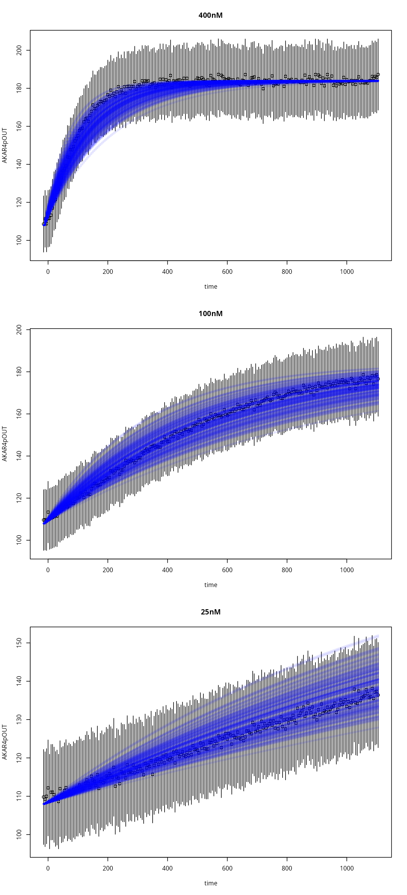

Simulating a model
simulate.RmdReaction network models can be simulated as deterministic models or stochastic models. In this article we show the deterministic approach. An example of how to simualte from the stochastic model is available in this article.
Given a reaction network model, we can use the law of mass action to derive an ODE system that describes how the concentrations of the compounds in the system change in time.
To simulate the reaction network model deterministically with UQSA
you can use the simulator.c function:
simulate <- simulator.c(ex, modelName, parMap = parMap)This has created a closure
(simulate), with a single argument p:
y <- simulate(p)The simulate function remembers the experiments that it
was created with and produces results of the same length as
ex (the list of simulation experiments), with the same
experimental conditions.
It is often convenient to modify the parameters before passing them to the model. Here are possible reasons:
- the uncertainty is log normal
- you want to pass
exp(log(p) + rnorm(...))to the model rather thanpitself
- you want to pass
- the Markov chain is in log-space
- the sampler uses
p, but the model needs10^p
- the sampler uses
- the model parameters are linearly dependent
- we have to reliably pass
c(p[1]+p[2], p[2]+p[3], p[3]-p[1])to the model, every time
- we have to reliably pass
In such cases, you can write a mapping function, and use the
parMap argument-slot of simulator.c:
library(uqsa)
library(errors)
library(parallel)
f <- uqsa_example("AKAR4")
m <- model_from_tsv(f)
o <- as_ode(m)
#> Loading required namespace: pracma
C <- generateCode(o)
#> Warning in generateCode(o): This function will start a background yacas process via Ryacas.
#> There is currently no working way to reset/restart that process.
#> It is therefore not advisable to generate the code for two different models in the same R session.
#> The definitions for the two models will be mixed up.
modelName <- write_and_compile(C)
#> './AKAR4_gvf.c' was created.
#> building a shared library from c source, and using GSL odeiv2 as backend (pkg-config is used here).
#> cc -shared -fPIC `pkg-config --cflags gsl` -O2 -o './AKAR4.so' './AKAR4_gvf.c' `pkg-config --libs gsl`
ex <- experiments(m,o)For example, here parameters are in log-space.
simulate <- simulator.c(ex,modelName,parMap=logParMap)
p <- log(values(m$Parameter))
print(p)
#> kf_C_AKAR4 kb_C_AKAR4 kcat_AKARp
#> -4.017384 -2.244316 2.322388
#> attr(,"unit")
#> kf_C_AKAR4 kb_C_AKAR4 kcat_AKARp
#> "1/uM*s" "1/s" "1/s"
rprior <- rNormalPrior(mean=p,sd=0.2)
P <- rprior(150)
print(dim(P))
#> [1] 150 3All simulations happen here (timed):
options(mc.cores=parallel::detectCores())
ti <- Sys.time()
y <- simulate(t(P))
tf <- Sys.time()
print(difftime(tf,ti))
#> Time difference of 0.07762575 secsThe matrix P has columns of model parameters that are
log-normally distributed around OK-ish values (taken from the TSV file
AKAR4/Parameter.tsv):
par(mfrow=c(3,1))
for (i in seq(ex)){
tm <- ex[[i]]$outputTimes
plot( # data
as.errors(tm),
ex[[i]]$data,
main=names(ex)[i],
xlab="time",
ylab='AKAR4pOUT'
)
matplot( # simulation
tm,
y[[i]]$func['AKAR4pOUT',,],
add=TRUE, type="l",
lwd=3, lty=1, col=rgb(0,0,1,0.1)
)
}